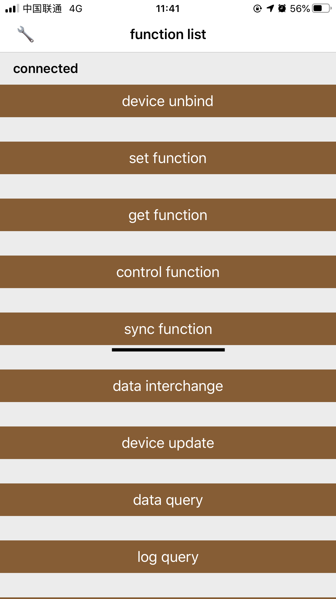
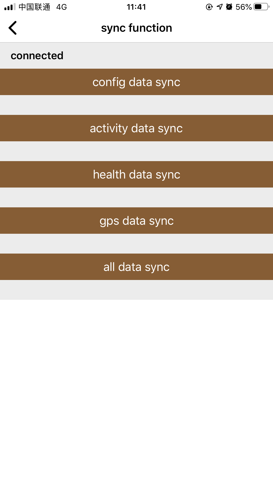

Data synchronization function
9.1Feature overview
Synchronizing device data is a very important function. It is recommended not to execute other commands during the synchronization process, even if the command is executed, it is invalid. The synchronization configuration is executed after the first successful binding of the connected device, and the device needs to perform the synchronization configuration when it is restored to the factory settings. Progress will be returned during synchronization, and the completion status will be returned after each item is synchronized. According to the synchronization status, it is judged whether the synchronization is completed. During the synchronization, the synchronization log is recorded and stored.
9.2 Synchronous initialization
Objc:
initSyncManager().wantToSyncType = IDO_WANT_TO_SYNC_CONFIG_ITEM_TYPE | IDO_WANT_TO_SYNC_HEALTH_ITEM_TYPE
| IDO_WANT_TO_SYNC_ACTIVITY_ITEM_TYPE | IDO_WANT_TO_SYNC_GPS_ITEM_TYPE;
Swift:
initSyncManager().wantToSyncType = IDO_WANT_TO_SYNC_ITEM_TYPE.CONFIG_ITEM_TYPE | IDO_WANT_TO_SYNC_ITEM_TYPE.HEALTH_ITEM_TYPE
|IDO_WANT_TO_SYNC_ITEM_TYPE.ACTIVITY_ITEM_TYPE | IDO_WANT_TO_SYNC_ITEM_TYPE.GPS_ITEM_TYPE;
9.3 Parameter Description
| Parameters | Description | Remarks |
|---|---|---|
| isSyncHealthRun | Whether the currently connected device is syncing | readonly,bool |
| isSyncConfigRun | Whether the currently connected device is synchronizing configuration information | readonly,bool |
| isNeedSyncConfig | Does the currently connected device need to be synchronized to configure | readonly,bool |
| wantToSyncType | Set options that need to be synchronized | Sync configuration, sync health, sync activity, sync GPS |
| isSave | Whether the synchronized data is stored in the SDK database | Default YES |
| itemSyncTimeout | Timeout duration of each item synchronization | default 60 seconds |
9.4 Basic methods
Objc:
//Start synchronization
[IDOSyncManager startSync];
//End synchronization
[IDOSyncManager stopSync];
Swift:
//Start synchronization
IDOSyncManager.startSync();
//End synchronization
IDOSyncManager.stopSync();
9.5 Execute callback method
Objc:
initSyncManager().addSyncComplete(^(IDO_SYNC_COMPLETE_STATUS stateCode) {
//Sync completed status
}).addSyncProgess(^(IDO_CURRENT_SYNC_TYPE type, float progress) {
//Sync item, sync progress (0-1)
}).addSyncFailed(^(int errorCode) {
//Sync failed
}).addSyncSwim(^(NSString * jsonStr){
//If stored in SDK database, this method can not be added
//Synchronized swimming data, json data can be stored in the business layer,
//If the business layer stores data, it is recommended to set the SDK not to store isSave = false
}).addSyncHeartRate(^(NSString * jsonStr){
//If stored in SDK database, this method can not be added
//Sync heart rate data, json data can be stored in the business layer,
//If the business layer stores data, it is recommended to set the SDK not to store isSave = false
}).addSyncBloodOxygen(^(NSString * jsonStr){
//If stored in SDK database, this method can not be added
//Synchronized blood oxygen data, json data can be stored in the business layer,
//If the business layer stores data, it is recommended to set the SDK not to store isSave = false
}).addSyncBp(^(NSString * jsonStr){
//If stored in SDK database, this method can not be added
//Synchronize blood pressure data, json data can be stored in the business layer,
//If the business layer stores data, it is recommended to set the SDK not to store isSave = false
}).addSyncSleep(^(NSString * jsonStr){
//If stored in SDK database, this method can not be added
//Synchronized sleep data, json data can be stored in the business layer,
//If the business layer stores data, it is recommended to set the SDK not to store isSave = false
}).addSyncGps(^(NSString * jsonStr){
//If stored in SDK database, this method can not be added
//Sync GPS data, json data can be stored in the business layer,
//If the business layer stores data, it is recommended to set the SDK not to store isSave = false
}).addSyncSport(^(NSString * jsonStr){
//If stored in SDK database, this method can not be added
//Synchronous step data, json data can be stored in the business layer,
//If the business layer stores data, it is recommended to set the SDK not to store isSave = false
}).addSyncPressure(^(NSString * jsonStr){
//If stored in SDK database, this method can not be added
//Synchronized pressure data, json data can be stored in the business layer,
//If the business layer stores data, it is recommended to set the SDK not to store isSave = false
}).addSyncActivity(^(NSString * jsonStr){
//If stored in SDK database, this method can not be added
//Synchronize activity data, json data can be stored in the business layer,
//If the business layer stores data, it is recommended to set the SDK not to store isSave = false
}).addSyncConfig(^(NSString * logStr){
//This method can not be added
//Synchronization configuration completed a configuration synchronization callback a log
}).addSyncConfigInitData(^NSArray <IDOBluetoothBaseModel *>* (IDO_SYNC_CONFIG_DATA_TYPE type){
//According to the returned synchronization type, the initialized data model collection is returned corresponding to the business requirements
return [NSArray array];
}).mandatorySyncConfig(YES or NO); // The binding needs to perform synchronization configuration, and subsequent reconnection does not need to perform synchronization configuration
Swift:
initSyncManager().addSyncComplete!{(stateCode)in
//Sync completed status
}.addSyncProgess!{(type,progress)in
//Sync item, sync progress (0-1)
}.addSyncFailed!{(errorCode)in
//Sync failed
}.addSyncSwim!{(jsonStr)in
//If stored in SDK database, this method can not be added
//Synchronized swimming data, json data can be stored in the business layer,
//If the business layer stores data, it is recommended to set the SDK not to store isSave = false
}.addSyncHeartRate!{(jsonStr)in
//If stored in SDK database, this method can not be added
//Sync heart rate data, json data can be stored in the business layer,
//If the business layer stores data, it is recommended to set the SDK not to store isSave = false
}.addSyncBloodOxygen!{(jsonStr)in
//If stored in SDK database, this method can not be added
//Synchronized blood oxygen data, json data can be stored in the business layer,
//If the business layer stores data, it is recommended to set the SDK not to store isSave = false
}.addSyncBp!{(jsonStr)in
//If stored in SDK database, this method can not be added
//Synchronize blood pressure data, json data can be stored in the business layer,
//If the business layer stores data, it is recommended to set the SDK not to store isSave = false
}.addSyncSleep!{(jsonStr)in
//If stored in SDK database, this method can not be added
//Synchronized sleep data, json data can be stored in the business layer,
//If the business layer stores data, it is recommended to set the SDK not to store isSave = false
}.addSyncGps!{(jsonStr)in
//If stored in SDK database, this method can not be added
//Sync GPS data, json data can be stored in the business layer,
//If the business layer stores data, it is recommended to set the SDK not to store isSave = false
}.addSyncSport!{(jsonStr)in
//If stored in SDK database, this method can not be added
//Synchronous step data, json data can be stored in the business layer,
//If the business layer stores data, it is recommended to set the SDK not to store isSave = false
}.addSyncPressure!{(jsonStr)in
//If stored in SDK database, this method can not be added
//Synchronized pressure data, json data can be stored in the business layer,
//If the business layer stores data, it is recommended to set the SDK not to store isSave = false
}.addSyncActivity!{(jsonStr)in
//If stored in SDK database, this method can not be added
//Synchronize activity data, json data can be stored in the business layer,
//If the business layer stores data, it is recommended to set the SDK not to store isSave = false
}.addSyncConfig!{(logStr)in
//This method can not be added
//Synchronization configuration completed a configuration synchronization callback a log
}.addSyncConfigInitData!{(type)in
//According to the returned synchronization type, the initialized data model collection is returned corresponding to the business requirements
return [];
}.mandatorySyncConfig!(true or false);//The binding needs to perform synchronization configuration, and subsequent reconnection does not need to perform synchronization configuration
9.6 Demo synchronization function entry
 